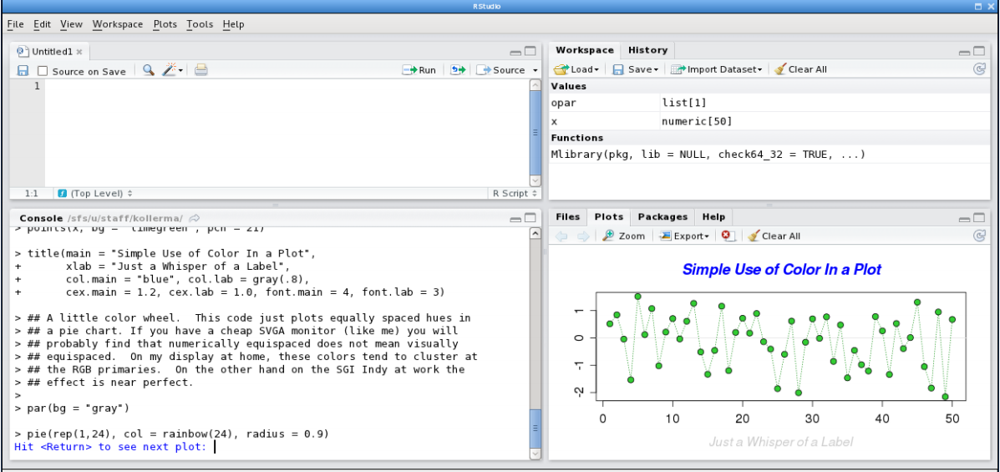

R里面的统计函数有很多, 这里只用线性模型lm以及(一维)非参估计最常用的三个smoother: Nadaraya-Watson kernel(NW, ksmooth), Local Polynomial(LP, loess), Smoothing Spline(SS, smooth.spline). 用这三个smoother作为例子, 介绍R里面统计回归的一些用法.
数据的形式是:

目标是估计函数m ...
R关于绘图应该可以写很多, 不过这里只列举在compstat这门课里最经常用的几个函数. 关于R的绘图, 详细了解可以运行 demo(graphics)或者 example("plot").
R里面的绘图命令分为两类: 一类是"high-level"的"创建新图片"命令, 运行以后会新画一个图; 另一类则是"low-level"的命令, 不会创建新图片, 而只会在当前图片中修改添加(例如添加线条, 添加点等). 下面分别简单介绍, 最后再介绍其他一些绘图配置的命令.
configurations/parameters
介绍一下常用的参数意义, 以及画图的配置. 详细文档见?par. 这些参数可以放在绘图命令中.
par(mfrow=c(1,2 ...
首先, R似乎默认所有的变量都为向量vector, 即使一个单独的数字也是长度为1的, 所以1等价于c(1).
> a <- 1
> a
[1] 1
> length(a)
[1] 1
> a[1]
[1] 1
> typeof(a)
[1] "double" # means "double vector" (I think)
> 1 ...这个"从入门到放弃"系列是为了应付eth的computational statistics这门课... 对R无爱...
terminology
首先在stat里面有一些叫法和以前不太一样:
predictor variable: 就是机器学习里面说的feature (Xi)design points: 是机器学习里的训练数据(X1...Xn)response variable: 要预测的变量(y)
Rstudio
这个是用R编程的标配, 确实很方便, 不用可惜. 另外R markdown也不错, 可以边写markdown边运行代码, 建议编辑器窗口里新建rmd文件.
- 默认有四个窗口: 编辑器, 变量, 命令行, 画图/帮助.

快捷键
一些常用的快捷键:
alt+-: 用于输入赋值符号<-- (编辑器窗口中)
ctrl ...
4.1 - Objects Everywhere
scala is pure OO: every value is an obj, every operation is a method of ...
This week, we'll cover traits, and we ...
Get up and running with Scala on your computer. Complete an example ...